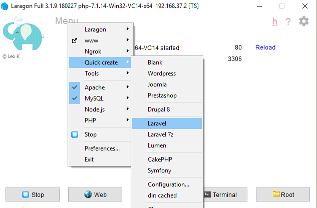
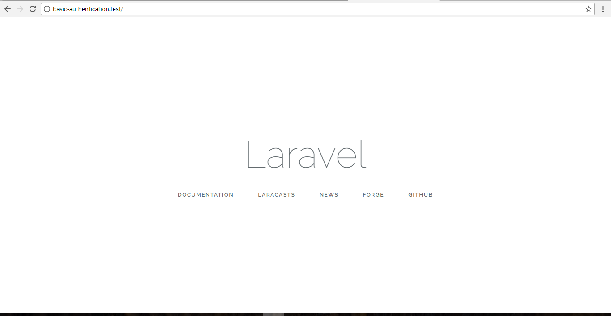
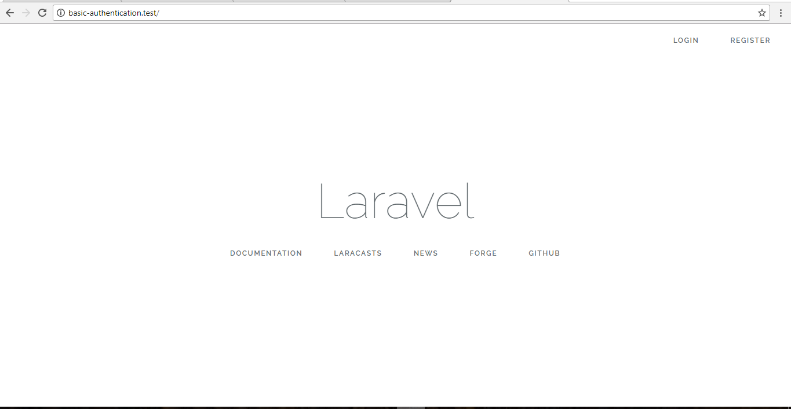
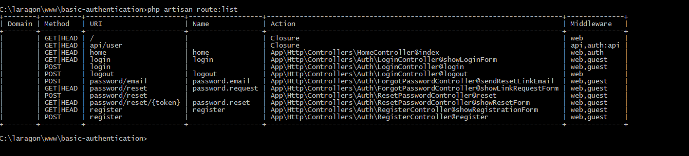
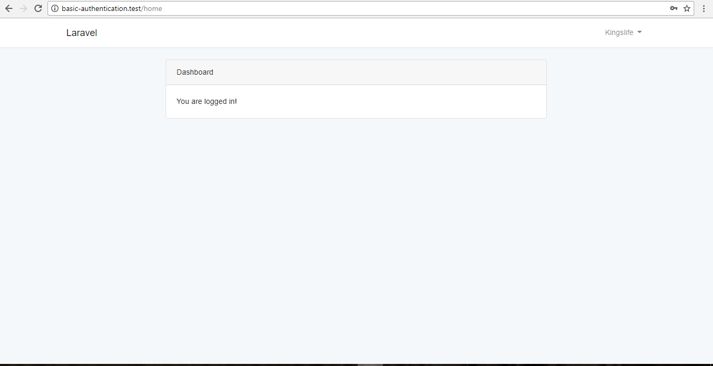

Installing Laravel
Besides using XAMPP for installing laravel as seen in Project 1, we can use a very nice tool called laragon. Laragon can be used to craft a new laravel project.
First, install latest version of nodejs on your machine. Then, head over to Laragon Page, download and install the latest version of laragon.
Start the server. Click on the Menu, Quick Create and then laravel as shown below
.
Enter Project name (let's say basic-authentication) and click on Ok. This will open up a terminal and download laravel project. Note the directory where it installs the project and open project in any text editor (Sublime, VS Code, Atom).
Laragon also generates a pretty url for us which can be seen from the terminal. Head over to the and enter the generated url. You should see laravel welcome page.

Authentication Command
Laravel has an easy way of working with authentication. In fact, we can scaffold an authentication system using the artisan command tool built into laravel.
First, let us set up the connection to the database. Laragon ships with a portable database system. In Laragon, click on database button and connect to the port. You'll notice that laravel had automatically created a database for our project (named basic-authentication in this case). How Cool Is That!
To connect to the database, we need to edit the .env file in the root of our project folder
Laravel project comes with a User Model and a create user migration by default. To craft the authentication. Open a terminal, change directory to the project folder and run
Refresh the browser. You should now see a Login and Register links at the top.

Click on the links. You will notice that it also generates the pages for login and register. Another thing the auth command did for us was to generate routes for us.
Remember that routes manages the view to be displayed.
Run the command below to see list of routes generated.

As we can see from the terminal, when we make a GET request to the login route, it hits the showLoginForm function in the LoginController. This function returns the view we see when we click on the login button.
The login page can be found in the reources/views directory. Same with the register.
We'll need a table for our users obviously. We can create tables using Migrations. There is a User migration file already created for us. Modify it as shown below
database/migrations/timestamp_create_users_table.php
As seen in the up function, the Schema class will create a user table with the associated columns. All we need to do is to run the command
This creates the table in the database. That's it Guys! You can now Register or Login. If successful, you'll be redirected to the home page found in the resources/views directory.
